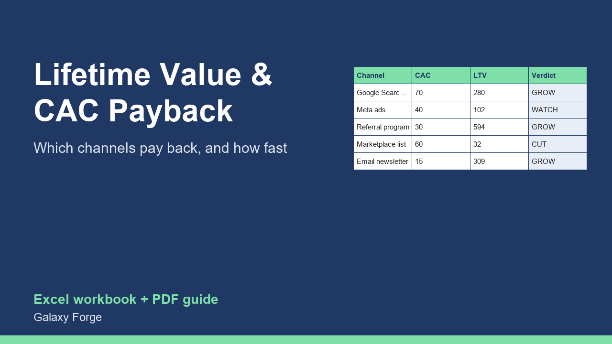

For each marketing channel: what a customer costs to win, what they are worth in gross profit, the value-to-cost ratio, and how many months it takes to earn the cost back.
Spending on marketing only makes sense when a customer is worth more than they cost to win. Most small businesses know their ad spend but not what one customer costs per channel or what that customer is worth over time.
This workbook works it out per channel: the customer acquisition cost (spend divided by new customers), the customer's lifetime value in gross profit (not revenue), the ratio between the two, and the payback period, the months of gross profit it takes to earn back what the customer cost.
A Summary blends all channels and points to the strongest and the weakest, so you know where the next marketing dollar should go.
1) On Settings, check the target ratio (3.0 is a common rule of thumb) and the payback limit you can afford to wait. 2) On Channels, enter one row per channel: spend in the period, new customers won, average order value, orders per customer per year, gross margin, and how many years a customer typically stays. 3) Read CAC, lifetime value, ratio, payback months and the verdict. 4) The Summary shows blended figures and the best and worst channel.
Price: $15, one-time. Download: customer_lifetime_value_cac_calculator.xlsx (Settings, Channels, Summary) and this guide. Works in Excel 2016 or later, Excel for Mac and Excel on the web; opens in Google Sheets and LibreOffice.
New product, listed 2026-10-24: no sales or reviews yet. Example figures in the workbook are illustrative.
This workbook is a planning tool, not financial advice. Lifetime value is an estimate built from the averages you enter; check it against real repeat-purchase data as it accumulates.